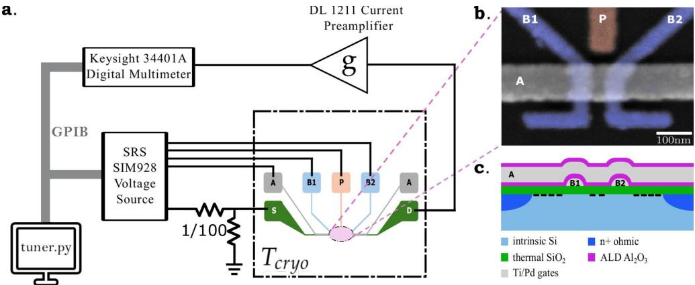
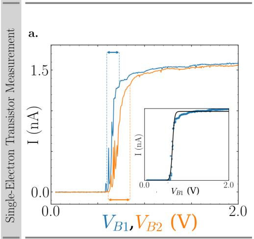

物理图像与目标
门控半导体量子点的运行，需要把每条柱塞栅、势垒栅的电压调到一组特定的目标值，使每个量子点同时满足少电子、单电子占据与点间隧穿耦合适中三件事。人工调控把这三件事拆成”测相图—对照经验—拧栅压”三步；自动调控（automated tuning）则把它写成”测量—识别—决策—更新—验证”的闭环。在阵列尺度上，调控参数维数等于或超过栅极数（一个 量子点线性器件含 条势垒、 条柱塞，二维阵列进一步含中心势垒与传感器栅），人工流程既慢又难复现，自动调控成为唯一可扩展的方案。
调控的目标可量化为一组判据：
- 量子点中最后一条电荷隧穿线已落在扫描窗口内——更小的电压方向不再出现新的隧穿线，称为”少电子区”已锁定；
- 电荷稳定图上的反交叉点（双点对应三相点）张开到可分辨的间距，但不致让两条隧穿线变平行；
- 充电能、点间耦合势垒、SET（single-electron transistor, 单电子晶体管）电荷传感器的灵敏度都已调到工作区。
（2022）把上述判据显式拆为四个工作点：①确认栅极开启与夹断电流曲线（pinch-off curves）正常；②通过传感器或源漏电流扫描得到二维电荷稳定图；③用卷积神经网络（convolutional neural network, CNN）定位少电子区；④迭代势垒电压直到 CNN 给出”适中耦合”的标签。在双点上达到这四个目标后，再配合虚拟电极把同一流程逐点推到 量子点阵列。
理论模型
多量子点常相互作用哈密顿量
在常相互作用（CI）模型下，含 个量子点的系统静电能为
其中 是各点电子数，， 是含自电容与互电容的电容矩阵， 描述栅压对系统总能的偏置。进一步把 Hubbard 拓展加上点间隧穿后哈密顿量取
其中 是电化学势， 是隧穿耦合， 是点内充电能， 是点间充电能。把这一公式记为式 1.12，明确点明两点：
- 栅压 直接调节前两项（电化学势与隧穿耦合），这正是自动调控可写为” 的闭环寻优”的物理基础；
- 多点调控若直接对全电压空间搜索，需要在 维空间内同时兼顾 与 ，测量与计算成本随 指数增长。把多点系统拆成局部双点、先单独调控、再通过虚拟电极联立，是化解这一困难的物理路径。
电化学势方向：常相互作用 → 虚拟电极
栅压对各量子点电化学势的影响是局域线性的：把电压变化记为 ，电化学势变化记为 ，杠杆臂归一化后引入归一化电容矩阵 ，有
其中 是由器件杠杆臂（lever arm）决定的标量， 即虚拟电极电压的变化量。取对角元归一化 ，并约定按隧穿线斜率 提取非对角元 ，则 直接给出”同时拧动多根物理栅”以使 不受扰动的代数规则。在其实验器件上算得的双点实例为
变换后 区电荷隧穿线变成相互垂直——这就是虚拟电极生效的几何判据。
势垒方向：指数律
势垒栅对隧穿耦合的调控不是线性的。（2025）2×2 阵列上实测的指数律为
其中 量化势垒栅的调控能力， 是虚拟势垒栅电压。在 2×2 Si/SiGe 阵列上四个最近邻的 在 – 之间分布，最强者约为最弱者的 5 倍。同一工作中还测出 vB41 对 的交叉调控系数 ——意味着势垒方向仍存在残余串扰，需要在自动调控里加入专门的补偿步。
双量子点的自动调控流水线
把”测量—识别—决策—更新—验证”展开到双量子点上，得到以下典型顺序。
第一步：栅极初始化与夹断电流拟合
在 20 mK 量级的稀释制冷机内，对每一条栅极单独测量夹断电流曲线
其中 是曲线幅值， 反映曲线随电压变化的快慢， 是横移量。由曲线的一阶导数与二阶导数极值点确定势垒电极的初始工作点；泵浦电极则取两个拐点之间的电压范围并向外适当扩大（式 3.1）。SET 传感器的栅极取微分信号最大处，使传感器对电荷态变化最敏感。
第二步：电荷稳定图扫描与少电子区定位
二维扫描两根柱塞栅，采集一张电流–电压图或传感器跨导图。扫描步长通常约每像素 1.5 mV，每个子相图切成 的小图（约 45 mV × 45 mV），再插值拉伸到 送入 CNN。
CNN 完成两类独立任务：
- CNN1 输出五元概率向量 ，分别对应无点、单点（少线）、单点（多线）、双点（适中耦合）、双点（过耦合）；
- CNN2 输出三元概率向量 ，对应欠耦合、适中耦合、过耦合。
对 CNN1，少电子区的特征是”沿着减小电压的方向不再出现新的隧穿线”——即第一个被识别为双点的像素块所在位置。对 42 块子相图打分后，把概率值高于 80% 的子相图标记为双点，按对应的最小栅压值排序即得到少电子区的中心。
第三步：CNN2 迭代调节势垒电压
CNN2 在少电子区对应的势垒电压附近迭代，步长约 20 mV。在其实验器件上展示的典型轨迹：起始势垒 ，经 8 次迭代后被推到 ，最后输出耦合值 0.67，落在适中耦合区间（前 5 次迭代耦合几乎不动，后 3 次出现明显变化——这是势垒方向指数律的体现）。
第四步：传统电压更新与回跳
每一次迭代执行”设势垒 → 扫电荷稳定图 → CNN 判定 → 条件更新”。迭代超出电压范围仍未达标时，回到初始化位置、抬高势垒初值重来，称为回跳机制。初始化本身还有光学旋钮：低温下用 780 nm 光照 + 栅偏置可把阈值电压稳定地设定到光照偏压上（宽偏压范围成立），为阵列初始化提供可复现的起点——见界面缺陷词条的光照阈值调定一节；电荷噪声侧的单体涨落器还可被反馈直接钉扎（见电荷噪声词条的反馈稳定一节）。
典型结果
双量子点调控完成后，相图可分为四个区域：(1) 无隧穿线的无点区；(2) 单量子点隧穿线的单点区；(3) 适中耦合的少电子区；(4) 过耦合的双点区。报道该流程在双量子点上达到了 90% 量级的少电子区定位准确度。
卷积神经网络架构与训练
自动调控中使用的图像识别模型以 AlexNet 为蓝本，其基本结构由输入层、卷积层（convolutional layer）、池化层（pooling layer）、全连接层（fully connected layer）和输出层组成。
- 输入：彩色（或灰度化）的电荷稳定图，尺寸 ；
- 第一层卷积：卷积核 ，步长 ，共 96 个核；池化后长宽减半；
- 第二段：卷积—池化—卷积—卷积—卷积—池化（保持长宽不变、深度增加）；
- 全连接：经多次卷积与池化后，特征图变为 ，展开为多个 4096 维的全连接层；
- 输出：softmax 给各类概率，输出”取到数值大的一项更高被取到的概率，同时保证数值小的一项也有一定概率被取到”。
训练采用有监督学习：预先为每个样本分配标签 ，通过比较预测结果与训练样本逐层优化权重 与偏置量 ，响应函数形式为
其中 通常取非线性激活函数。损失函数通过反向传播最小化，常用 Adam 或交叉熵。
训练集构建的关键问题是真实器件标签稀缺、电荷跳变与传感器伪影难模拟。采用的折中是用模拟相图扩充标签，同时加入 Laplace 算子对图像锐化以突出隧穿线、抑制背景波动；少量真实样本混入训练还可减少过拟合，因为含噪声的样本对特征畸变更鲁棒。
阵列扩展：虚拟电极与量子点遍历
从双点到 点的策略
自动调控在双点上并不比人工有压倒性优势；真正的优势体现在阵列上。两个核心技术：
- 虚拟电极：把栅极串扰矩阵求逆，使每个量子点只与对应的虚拟电极耦合；
- 量子点遍历（quantum dot switching）：把阵列拆为多个双量子点子系统依次调控，矩阵按乘法规则复合更新 。
隧穿线斜率的自动提取
虚拟电极的建立等价于求解交叉电容矩阵的逆矩阵。沿某量子点隧穿线移动时其电化学势不变，即 ，于是
就是电荷隧穿线在 平面的斜率。在实测相图上，隧穿线可能残缺、被背景遮挡，直接拟合斜率容易出错。采用霍夫线变换（Hough line transform）从稳定图中检测线段：对超过阈值的所有像素点 ，在极坐标 下取
同一直线上的所有点会在极坐标中收敛到一个 ，由此自动给出线段位置与斜率。配合 CNN 的相图分类，虚拟电极的建立可在无人工干预的条件下完成。
四量子点示例： 15 栅器件
器件含 15 条可调控栅极（5 条势垒 + 4 条柱塞 + SET 的栅极 + 端栅），共 4 个量子点与 2 个 SET。流程按 顺序推进：
- 第一步完成 的调控，建立虚拟电极 ；
- 加入 时，把势垒电极 – 设回默认初始电压， 保持调好的参数不变，把 作为新的双点开始调控。共用的 因少电子区所需电压在第一步已经找到、且基本固定，因此在新一轮调控中起过渡作用；
- 完成 后，对变换矩阵做一次乘法更新加入 ；
- 的加入保持 不变，再把 作为新双点调控。
最终结果： 从 0.6 V 降至 0.56 V（QD1–QD2 初始耦合过大）， 从 0.23 V 升至 0.37 V（QD2–QD3 初始耦合过小）， 从 0.35 V 升至 0.51 V（QD3–QD4 初始耦合过小）。前后对比 相图，少电子区位置几乎不动，证明虚拟电极对既有电荷态具有保护能力。
多量子点电荷稳定图的复杂性
量子点系统完整的电荷稳定图维数为 ， 时无法用二维图直接展示。将其投影到任意两根栅压轴上，会同时出现 4 种斜率的隧穿线（每个量子点贡献一种），且反交叉点形状由近邻与次近邻相互作用共同决定——这正是多点系统人工调控困难的根源。虚拟电极通过独立控制每个 ，把高维相图”打散”为可单独处理的二维相图，从根本上回避了高维可视化与识别的困难。
为什么必须闭环
器件存在三类不可建模的扰动，使离线一次预测无法保证最终状态：
- 电荷跳变（charge jump）：势阱中载流子的突然重排会瞬间改变局部电势，让”已调好”的电压配置不再有效；
- 漂移（drift）：温度、电磁环境、应力引起的低频慢变；
- 随机电报噪声（random telegraph noise）：双能级系统缺陷产生的双态翻转，使每个测量点都带有不可预测的偏置。
自动调控系统应对这些扰动的方式有两种：一是 CNN 同时输出概率而非硬标签，并在概率低于阈值时缩小步长或重新测量；二是回跳机制把每次迭代纳入电压范围检查与失败回退。概率阈值的选取本身也是设计参数：对 42 块子相图打分后观察到 CNN 输出概率主要分布在 80% 以上与 20% 以下两个区间，50%–80% 之间几乎为空，因此 80% 阈值既能筛掉不确定样本又留有余量。
置信度（confidence）和分布外（out-of-distribution, OOD）检测因此被反复强调为自动调控的核心属性：当输入图像与训练分布显著偏离（例如出现训练集中没有的杂点、隧穿线消失、或背景剧烈漂移），CNN 输出概率应同时变低或偏向空值，触发重新扫描而非强行迭代。
从双点到二维阵列
双量子点的成功可被推广到 1D 线性阵列，再推广到 2D 阵列。以（2025）的 Si/SiGe 2×2 阵列为例：四个量子点共含 11 根有效栅极（7 势垒 + 4 柱塞），串扰矩阵 为 ；先把所有点单独排空、再按 、、、、、 的顺序两两成双点建立虚拟栅极，最终得到每个量子点充电能 2.83/5.02/3.05/4.63 meV、平均杠杆臂 、最近邻隧穿耦合可从约 调到超过 。
二维阵列引入两个新变量：中心势垒栅 CB 与次近邻隧穿耦合 。CB 上的电压独立调节 ，可用于表面码（保留最近邻、抑制次近邻）与 Hubbard 量子模拟（保留特定次近邻）。 通过相图反交叉点的双曲线拟合提取，无需做完整的 维电荷稳定图。硬件调好之后的”软件层”自动化同样有成形方案：行列共享门的约束阵列上，基于状态转移系统形式化的量子编译器可在实用时间内为任意量子电路生成含穿梭与串扰规避的操作程序（见电荷穿梭词条的约束阵列程序生成一节）。
参数与量级
| 量 | 典型值 | 来源 |
|---|---|---|
| 稀释制冷机电子温度 | 量级 | |
| 栅极数（双量子点示例） | 5 条势垒 + 2 条柱塞 + 3 条 SET 栅 | |
| 栅极数（四量子点示例） | 15 条（5 势垒 + 4 柱塞 + SET 栅） | |
| 栅极数（2×2 阵列示例） | 11 根有效栅极（7 势垒 + 4 柱塞） | |
| 夹断电流拟合 | ||
| 电荷稳定图扫描步长 | 约 1.5 mV/像素 | |
| CNN 输入子图尺寸 | （≈45 mV×45 mV） | |
| CNN 拉伸后尺寸 | ||
| 双量子点少电子区定位准确度 | 约 90% | |
| 双量子点 CNN1 概率阈值 | 80% | |
| 势垒电压迭代步长 | 约 20 mV | |
| 势垒电压迭代次数 | 8 次（适中耦合） | |
| 隧穿线斜率实例 | 、（GaAs 双点） | |
| 实测值 | ||
| 势垒指数律调控系数 | – | |
| 交叉调控系数 | （vB41→） | |
| 四点充电能 | 2.83 / 5.02 / 3.05 / 4.63 meV | |
| 平均杠杆臂 | ||
| 最近邻隧穿耦合调节范围 | 约 到 | |
| 阵列迭代势垒电压 | V； V； V | |
| 锁相激励频率/幅值（参考） | 73 Hz / 0.5 mV 分压 |
实验特征
- CNN 同时输出概率：少电子区子图打分后， 的子图标记为双点并按电压大小排序， 的子图被弃置；介于二者之间的样本极少，这本身就是”分类器学到有用特征”的证据。
- 势垒电压与耦合强度的非线性：迭代前 5 次耦合几乎不动、后 3 次突跃——势垒指数律 的直接体现。
- 加入新点后少电子区几乎不动：是虚拟电极生效的判据，证明既有 不被新栅极扰动。
- 物理量直接驱动 CNN 标签：网络学到的不是”图好看不好看”，而是隧穿线斜率、反交叉点形状、隧穿线是否存在这三类与器件状态一一对应的特征。
- 可失败回退：每次迭代都伴随电压范围检查；超出范围即回跳到初始化位置重新尝试。
- 可直接对接 QTT 仿真器：先用 Python
qtt程序包建模预测、再以真实测量迭代修正，是当前大规模阵列常用的混合策略。
SET/SHT 传感器的全自动标定
从量子点调参扩展到传感器标定自动化：SET/SHT 从冷却后的零知识状态自动进入高灵敏度工作点——协议自动识别工作区、扫描转移特性、锁定偏置。冷却后无需人工即可完成传感器初始化，多传感器系统的部署成本大幅下降。

SET/SHT 全自动标定协议：冷却后零知识初始化——自动识别工作区并锁定偏置。图源：arXiv:2502.02521，Fig. 1。

标定性能：自动锁定后的传感器灵敏度。图源：arXiv:2502.02521，Fig. 2。
与其他概念的关系
- 电荷态识别是自动调控的”感知层”：CNN 把图像转为”少电子/适中耦合”等标签，自动调控据此决定电压更新方向；二者差异在时间尺度——前者是一次性识别，后者是闭环迭代。
- 虚拟电极是自动调控在阵列上的关键代数接口：通过把交叉电容矩阵求逆，把高维强耦合控制空间对角化为可单独处理的低维坐标。其标定步骤（传统需为每对柱塞栅采整张电荷稳定图）可用锚点三角形+梯度特征的快速提取法加速（约 10% 采样、5.84×–19.34× 提速，见该词条”快速提取”一节）。
- 交叉电容矩阵是虚拟电极的物理输入；条件数过大时反演会放大噪声，自动调控此时要么用正则化伪逆、要么加入额外的校准步骤。
- 量子点阵列与二维阵列是自动调控的目标器件；自动调控是它们从”实验室单件”走向”可重复批量制备”的关键技术。
- 量子最优控制与机器学习表征：超导侧的对应升级——不再只优化工作点，而是从实验数据学出任意控制下的完整动力学模型再梯度优化脉冲（MLQOC），对抗模型偏差。
- 电荷稳定图是自动调控的”地图”：隧穿线是否存在决定少电子区位置，斜率给出串扰矩阵元素，反交叉点张开程度决定耦合强度判定。
- 常相互作用模型为自动调控提供电压–电化学势的线性映射前提；偏离 CI 时（如次近邻耦合显著、势垒指数律主导）需在算法中显式纳入补偿。
- 交换相互作用与隧穿耦合 直接相连：自动调控在势垒方向的精度直接决定双比特门参数 的稳定性。
- 单发读出与Rabi 振荡等操控层概念对自动调控提出了隐含约束：少电子区定位必须满足比特工作点对 与 的精度要求，否则后续比特操作无法开展。
- 电荷噪声是自动调控必须容忍的扰动源；自动调控的回跳、阈值与置信度机制都是对低频漂移与随机电报噪声的工程化应对。
- 全局操控与频率均匀化解决的是调谐范围本身的问题：自动调控在给定范围内闭环寻优，均匀化（电子输运平均 g 因子）把范围扩大到自然频率分散——两者是大阵列频率管理的互补两层。
参考文献
- 自动调点的机器学习流水线代表作：Kalantre et al., npj QI 5, 21 (2019)。
完整文献库（含各篇站内全文页）见 参考文献库。